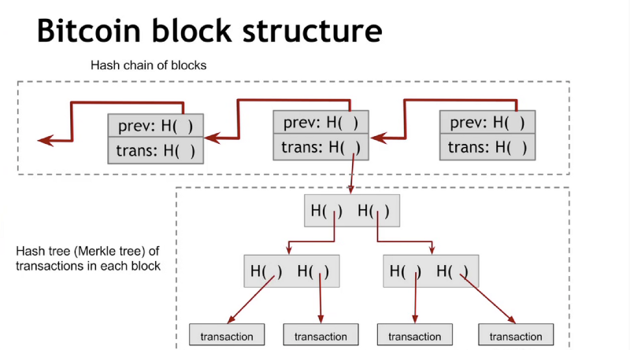

数字加密货币背后包含很多令人着迷的技术。下面来简单介绍一下其中的技术：区块链以及共识机制。
哈希函数及数据结构
在介绍区块链之前，首先需要介绍一下区块链技术的基石：哈希函数 (Hash Function)。
哈希函数具备以下三个特性：
- 输入可以为任意大小的字符串。
- 它产生固定大小的输出（如256位的字符串）。
- 它能在很短的时间内计算出输出结果（时间复杂度为 O(n)）。
在这个三个特性的基础上，为了达到密码安全，哈希函数还需要具备三个附加特性：
- 碰撞阻力（Collision Resistance)，即能找到两个不同输入得到相同输出的概率很小。比如李雷通过哈希函数加密的密钥不能正好跟韩梅梅的相同，否则李雷就可以用自己的密钥开别人家的“门”了。
- 隐秘性（hiding)，既函数的输出具有随性，任何微小的输入改动也会导致输出的完全变化。
- 谜题友好 (Puzzle Friendliness)，即在已知输出值的情况下，我们没有可行的办法推导出输入值。
哈希函数是如此有效，它被运用到各种密码加密等场景中，从简单的登陆验证到复杂的数字签名都有应用。当然我们这里主要侧重于其在区块链之中的应用。
区块链
区块链是整个数字加密货币的技术核心，我们可以把它简单地理解成数字分布式账本。它的核心技术就是运用到了哈希指针。
首先哈希指针是一种数据结构，简单来说它就是既指向数据存储位置又存储了数据哈希过后的值（既数据的指纹）。这样设计的好处是这个指针能够轻易检验被指数据有没有被修改过，因为即使源数据发生微小改变，根据哈希函数的特性，数据的哈希值也会发生很大的改变。
TODO：附图
利用哈希指针的特性，我们可以构建各种各样的数据结构。当我们用哈希指针来实现链表的时候，我们就将这样的数据结构称为区块链。
TODO：附图
如图所示，所有区块都被上一个区块所指，整个链可以一直追溯到头指针。头指针也被称为创世区块，创世区块一旦被创建就不能修改。 这样设计的最大好处就是防止区块被篡改。因为任意一个区块被修改，也将必然导致数据与一个区块存放的哈希值不匹配，那么上一个区块也必须被修改，以此类推。直到碰到创世区块，因为创世区块是无法被修改的，也就导致了整个区块链不能被修改。
TODO：附图修改链
梅克尔树
另一个用哈希指针实现的常见结构是二叉树。使用哈希指针的二叉树也叫做梅克尔树。
TODO：附图梅克尔树 在梅克尔树数据结构中，所有数据块都被两两分组，每两个子节点都被一个父节点所指，自下而上形成二叉树的形状。
如上所述，我们只需要记住根节点的哈希指纹，我们就可以轻易验证整个梅克尔树有没有被修改过。因为如果任何节点被修改，这个修改就会通过哈希指针逐层一直传递到根节点。 同样的，也得益于其二叉树结构，如果我们想要验证一个节点是否归属于该树，被验证节点只需要提供从根到目标总共约log（n）个节点来进行验证即可。同时如果将梅克尔树按照一定规则进行排序，也能达到二叉搜索树的效果。
在实际应用中，比特币同时遇到了上述两种数据结构：

梅克尔树用来保存交易数据，然后每个树作为区块的一部分保存在区块链中。
共识机制
在分布式系统中，由于没有一个中心的权威，整个网络的最大挑战就是如何让网络中的所有节点达成共识。
工作量证明（Proof of work）
工作量证明的核心理念是，让处理交易的节点通过解决一道哈希函数谜题来证明自己的工作量。具体谜题内容是给定一个哈希值区间，你要找到一个有效输入值以使得其哈希值落在这个区间以内。 因为我们知道在已知一个哈希输出值的时候，是没有一个有效算法来推导出输入值的，因此你只能通过“暴力破解”的方式尝试大量的输入值来找到一个有效的结果。这个就是工作量的要求。 一旦一个节点找到了答案，会把最新的区块打包并加入到区块链尾部。之后会将结果广播给网络中的其他节点，其他节点只会接受最先找到的有效结果。这样一来谁先找到有效结果，这个有效结果就会不断被传播并最终使整个网络达到一致。
那么这个如何做到公平公正呢？因为谁能最先找到谜题答案是完全随机的，这完全取决于你在整个网络中的运算能力在加上一点点的运气。由于胜出者的随机性，你若要想操纵完全选择的结果，你就必须保证你的算力超过整个网络算力的50%。可想而知，当一个网络足够大的时候，要投入51%的算力是几乎不可能的（除非你能够“贿赂”网络中的其他节点）。
权益证明（Proof of stake）
工作量证明虽然在比特币运用中被证明非常的有效，但是它的一大缺点就是浪费太多资源在解决谜题之上（对于挖矿浪费电力的报道早已层出不穷）。因此人们也在找寻其他替代方案能够在保证安全的情况下降低对算力的要求。权益证明就是其中的一个策略。
简单来说，在权益证明中达到共识的方法是根据每个人所拥有货币或币龄（既权益）的数量，数量最多的用户可以决定下一个区块的创建。显而易见的，这样的规则很容易导致网络被少数货币大户控制，所以在此基础上派生出了其他随机算法已保证胜者的选择相对随机。
总结
比特币从2008发明至今，可以说是经受住了时间和市场的考验。虽然其在效率上还远赶不上现实中的银行交易系统，但其背后扎实技术的体系仍能给我们带来丰富的思考和启发。同时我也相信随着技术的深入，我们也一定能找到一个工作量证明的很好替代，从而给整个区块链带来一轮新的革命。